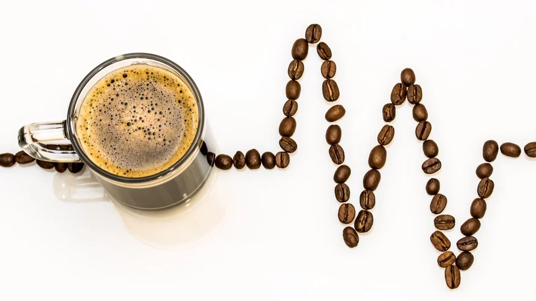

многие люди любят начинать день именно с этого напитка

Главное вещество кофе — кофеин. Он является возбудителем систем организма:
Но если злоупотреблять напитком, то это может привести к негативным последствиям: тремор, повышенное давление, изжога, бессонница. Употребляйте напиток в умеренных количествах, не более 5 эспрессо в день.
Более подробно читайте на сайте